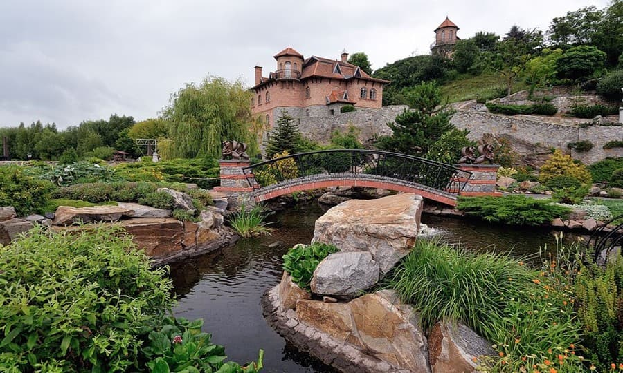
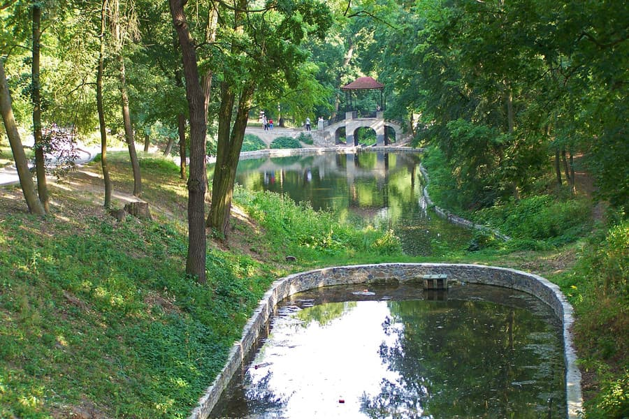
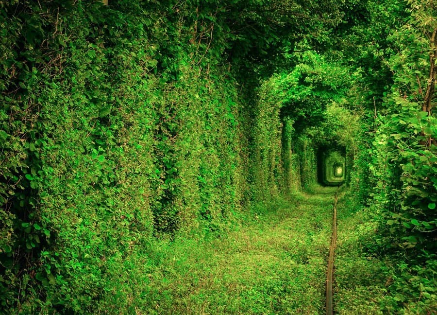
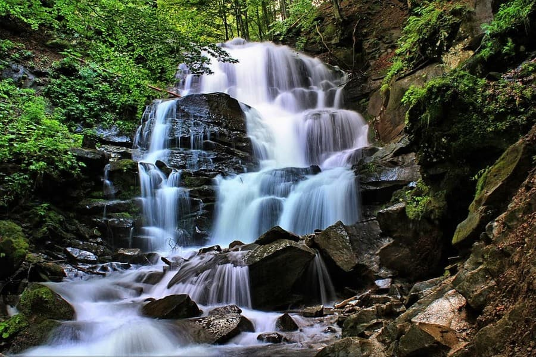
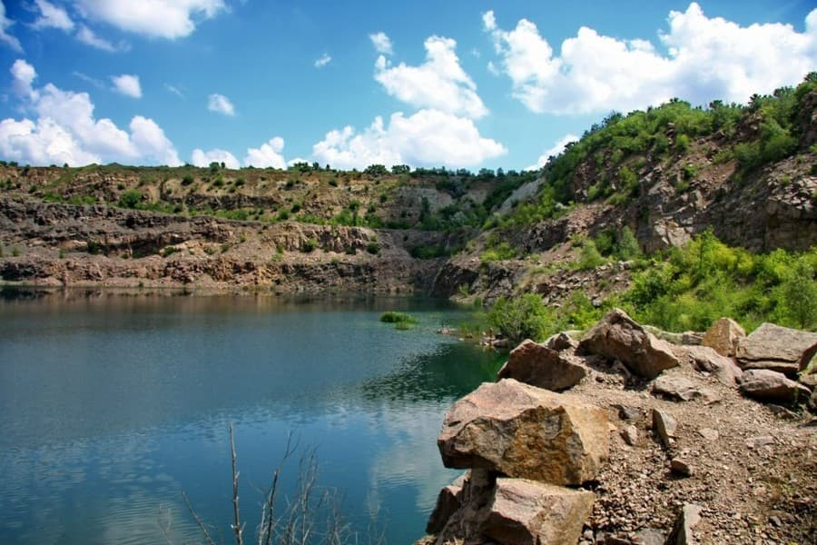
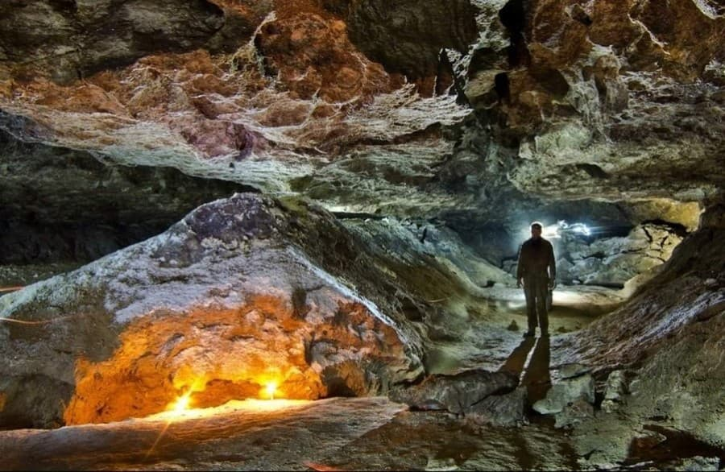
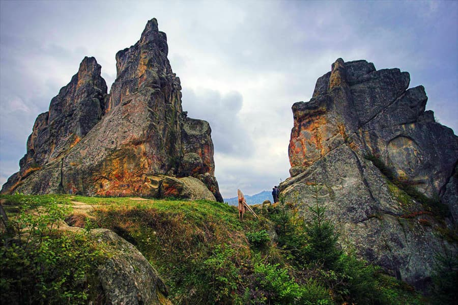

Топ-7 місць в Україні, які варто побачити
Україна неймовірно багата на дивовижні місця і пам'ятки. Ми представимо 7 з них, які варто побачити, щоб бути враженим красою та унікальністю природи.
1. Ландшафтний парк в Буках
На мальовничих берегах річки Роставиця в Буках розташований красивий ландшафтний парк. Це одне з місць в Україні, де ви відчуєте незвичайну умиротворення і насолодитеся гармонією з природою. Перед вами постануть елегантні містки, затишні альтанки і вишукані скульптури, чудесно оформленні будівлі садиби, на яких часто можна побачити цифру "7". Невеликий зоопарк на території ландшафтного парку познайомить з барвистими павичами, милими поні і навіть з ведмедями і левами. З дітьми також цікаво буде відвідати "Казкову поляну" з різноманіттям фігур персонажів всіма улюблених казок.
-
Як дістатися: до міста Біла Церква, звідки на маршрутці або автобусі до села Буки.
- Де зупинитися: готелі Білої Церкви.
2. Дендропарк "Олександрія"
Дендропарк "Олександрія" є найбільшим і найстарішим на території нашої країни. Створений в 1788 році цей шедевр садово-паркового мистецтва має площу 405,6 гектарів. Тут міститься грандіозна колекція рослин - понад 2500 видів. Примітний парк і старими дубами, багатьом з яких більше 300 років, найстаршим в Україні тюльпановим деревом і сосною Веймутова.
-
Як дістатися: з Києва від станції метро "Либідська".
- Де зупинитися: готелі Білої Церкви.
3. Тунель кохання
Недалеко від села Клевань на Рівненщині є одне чудове і романтичне місце, створене природою і людською діяльністю. Це тунель кохання, який утворився з дерев і кущів на залізничній колії. Наприкінці весни тут можна стати свідками дивного видовища. Зелене листя і квітучі рослини немов покривають тунель мальовничим густим килимом. Зараз це місце є популярним серед закоханих пар і молодят. Тут люблять фотографуватися і незабутньо проводити час.
-
Як дістатися: на електричці з Рівного в напрямку Ковеля ("Здолбунів - Ковель"). Через сорок хвилин ви будете в селі Клевань.
- Де зупинитися: готелі Рівного.
4. Водоспад Шипіт
Коли мова йде про найкрасивіші місця в Україні, просто неможливо не згадати про Карпати. Тут в ущелині річки Пилипець можна побачити один з найпрекрасніших водоспадів нашої країни - Шипіт. Подивитися на це диво природи приїжджають тисячі туристів з різних куточків світу. З висоти 14 метрів у вигляді потужних каскадів спускаються води Шипіта, розсіюючись величезними хмарами крапель. У цьому місці часто збираються представники неформальних течій. У липні тут проводиться фестиваль, присвячений святу Івана Купала.
-
Як дістатися: на відстані десять кілометрів від Шипіта є ж/д станція "Воловець", куди приїхати можна із міста Мукачеве. Також до водоспаду можна добратися з села Пилипець, куди ходять рейсові автобуси.
- Де зупинитися: готелі Карпат.
5. Гранітно-степове Побужжя
Гранітно-степове Побужжя - по-справжньому унікальний куточок української природи. Це місце являє собою найдавнішу частину суші материка Євразія, яка вже близько шістдесяти мільйонів років не покривалася морськими водами. На території цього природного скарбу мешкає близько 86 червонокнижних представників тваринного і рослинного світу. Тут на величезних гранітних скелях люблять тренуватися альпіністи та скелелази.
-
Як дістатися: до міста Первомайськ (Миколаївська область), а далі на громадському транспорті до Мигії (близько 10 кілометрів).
- Де зупинитися: готелі Миколаївської області.
6. Оптимістична печера
Недалеко від села Королівка в Тернопільській області знаходиться найдовша на планеті гіпсова печера. Її називають Оптимістичною печерою. Утворена ця природна пам'ятка була в результаті розчинення гіпсових порід підземними водами близько 14 мільйонів років тому. Тут вражають уяву красиві гіпсові кристали, що мають різні форми і колір, кришталево чисті підземні озера із дзеркальною поверхнею. Повітря в печері, незалежно від погодних умов на поверхні, завжди має постійну температуру - від 9,5 до 10,5 градусів.
-
Як дістатися: з Тернополя кожні 2 години відправляються автобуси до міста Борщева, звідки можна доїхати до села Королівка.
- Де зупинитися: готелі Тернопільської області.
7. Урицькі скелі
Урицькі скелі є цінною природною і археологічною пам'яткою і не мають аналогів на території Європи. Тут можна в лісовій гущавині побачити могутні скелі, які досягають висоти п'ятдесят метрів. Пам'ятка знаходиться у складі природного парку "Сколівські Бескиди" (історико-ландшафтний комплекс "Тустань"). Справжнім скарбом цього місця є наскальні малюнки, один з яких зображає символ Сонця, а інший - величезне обличчя людини.
-
Як дістатися: зі Львова на маршрутці, яка слідує в Східницю або Стрий.
- Де зупинитися: готелі Східниці.